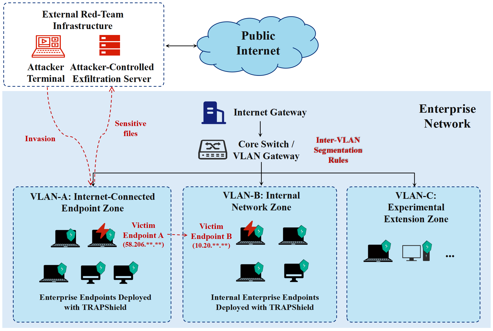
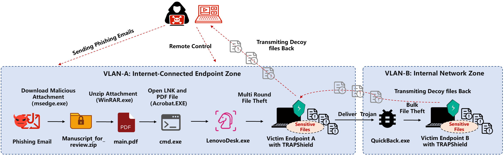
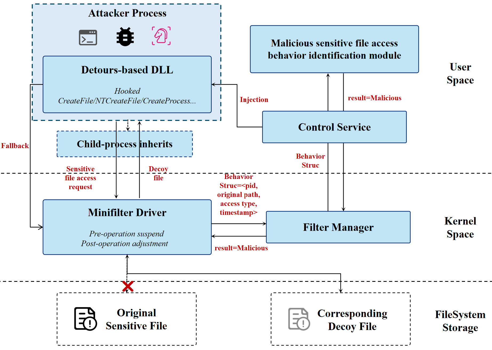
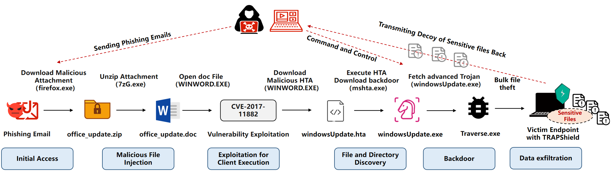
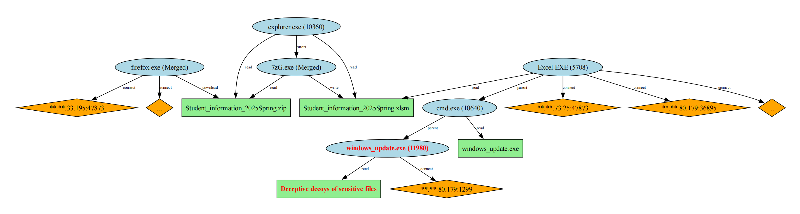
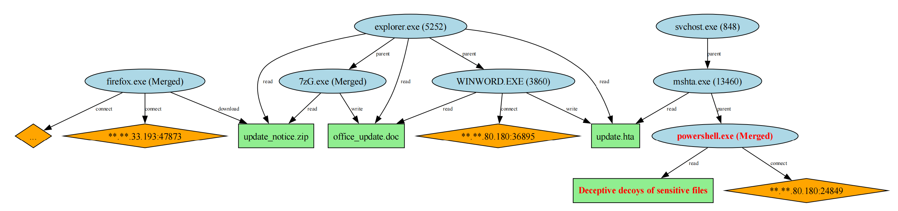
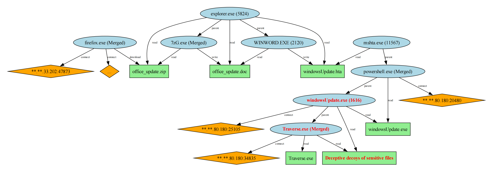
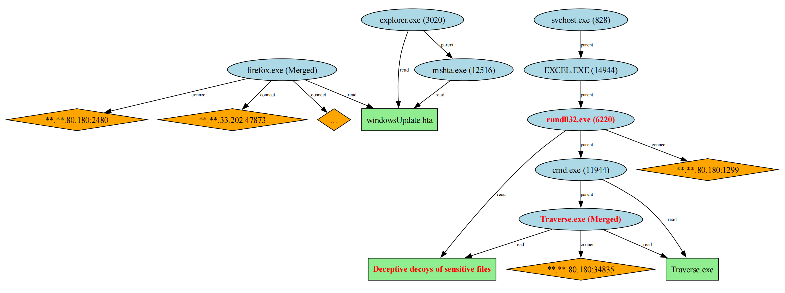
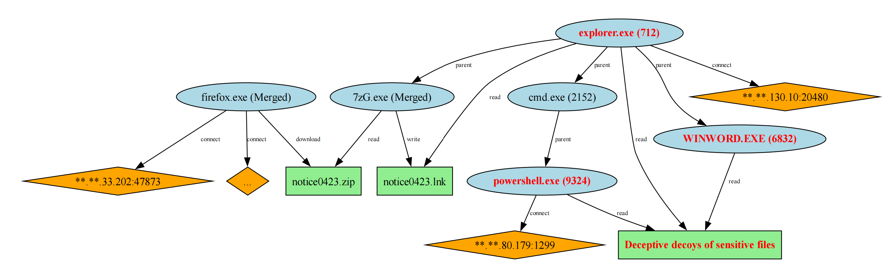

Additional Details for TRAPShield: Real-Time APT File Theft Defense with Multi-Domain Behavioral Characterization and Transparent Decoy Redirection
This supplementary page provides additional experimental details for TRAPShield, including statistical feature analysis, realistic dataset construction, attacker-view decoy transparency, defense coverage, and detailed attack reconstruction results.
Datasets and artifacts of TRAPShield are available at https://osf.io/h6cyv/.
A. Preliminary Study on Quantitative Analysis of Multi-domain Behaviors
The case analyses reveal clear behavioral distinctions between benign and malicious sensitive file accesses. We leverage Analysis of Variance (ANOVA) to quantify these differences. The null hypothesis \(H_0\) posits no significant difference in behavioral features between the two access categories. We assess six feature domains: specific file operation frequencies, registry operation frequencies, TCP/IP network event counts, specific file type access frequency and diversity, statistical characteristics of network packet lengths, and N-gram patterns of file I/O actions.
We perform one-way ANOVA to determine whether to reject \(H_0\). Table avg_pvalue_by_domain presents the average $p$-values across the six feature domains. With a significance threshold of \(\alpha = 0.05\), all domains yield $p$-values below 0.05, confirming that benign and malicious accesses exhibit statistically significant behavioral differences. For instance, the 4-gram pattern FileIOFileCreate_FileIORead_FileIORead_FileIORead yields a $p$-value of \(2.54\mathrm{e}{-14}\), and the entropy of packet lengths yields \(8.11\mathrm{e}{-70}\). These results indicate that multi-domain historical behavioral features are highly discriminative for identifying malicious sensitive file accesses.
| Feature Domain | File Operation | Registry Operation | TCP/IP Behavior | Accessed File Type | Packet Length Sequence | File I/O N-gram |
|---|---|---|---|---|---|---|
| Average $p$-value | \(7.73\mathrm{e}{-16}\) | \(4.96\mathrm{e}{-05}\) | \(1.72\mathrm{e}{-02}\) | \(3.33\mathrm{e}{-03}\) | \(1.87\mathrm{e}{-02}\) | \(1.81\mathrm{e}{-02}\) |
| Variance | \(1.18\mathrm{e}{-29}\) | \(3.93\mathrm{e}{-08}\) | \(1.77\mathrm{e}{-03}\) | \(2.16\mathrm{e}{-04}\) | \(3.86\mathrm{e}{-03}\) | \(6.57\mathrm{e}{-03}\) |
| Reject \(H_0\) | ✓ | ✓ | ✓ | ✓ | ✓ | ✓ |
B. APT File Theft Scenario Construction on Real Opentional Endpoints
We construct two scenarios to further improve the authenticity of dataset construction and experimental evaluation. The specific procedures are as follows:
We deployed core switches, 9 real operational office endpoint devices, and 2 attacker terminals within a real-world enterprise network environment, segmenting the network into VLAN zones including the internet-connected endpoint zone and internal network zone. The endpoint devices are Lenovo laptops running Windows 11 OS, all of which are deployed the TRAPShield system. In collaboration a professional red team from Antiy Technology, a leading security company, to execute APT file theft attacks.
We partnered with a professional red team from leading security to execute an APT file-stealing attack. The attacker endpoints are Ubuntu 22.04 desktop machines. The network topology and attack processes are illustrated in below two Figures.

Victim Endpoint A: Located in the internet-connected endpoint zone, this endpoint received a phishing email from the attacker and downloaded a malicious attachment, triggering remote control and backdoor installation. The attacker conducted multiple rounds of manual file theft directly on this endpoint, exfiltrating sensitive files to an attacker-controlled file server.
Victim Endpoint B: Located in the internal network zone, this endpoint was compromised via credential theft and lateral movement from Victim Endpoint A. The attacker deployed an advanced Trojan to collect sensitive files in bulk and exfiltrated them via Victim Endpoint A to the exfiltration server.

R-1 and R-2.
Based on these processes, we generated two datasets from the compromised endpoints, designated R-1 and R-2. We also added two benign scenarios RW-1 and RW-2, in which the victim devices only run normal applications and were not attacked in any way. Our analysis shows that Victim Endpoint A contained one disk, 514 business files, and 228 sensitive files; Victim Endpoint B contained two disks, 2,152 business files, and 615 sensitive files, covering 11 types of sensitive files.
C. Further Analysis of the Transparency of Decoy-defense Mechanism from the Attacker’s Perspective
We perform the "attacker perspective consistency" evaluation of the workflow in our constructed APT file theft scenarios to deeply analyze whether attackers could detect the decoy-defense mechanism through file content or metadata comparison. In the evaluation scenarios, attackers collected system information and inspected file directories through remote commands and file-browser plugins. Then performed manual or bulk theft of sensitive files and transmitted the collected files to the attacker-controlled side.
For each APT file theft scenario, we track five selected sensitive files and record the attacker-visible information throughout the attack workflow. Specifically, we collected the file information observed by the attacker during the reconnaissance and information gathering, as well as the file artifacts obtained after theft and exfiltration, including file content, size, and timestamp attributes. Results are shown in the table below. The file size and timestamp attributes observed by the attacker were consistent with the decoy file. And the file content, size, timestamp obtained after transmission were also consistent with the decoy file, rather than the original sensitive files. Therefore, attackers could not find inconsistencies between the file content and attribute views at different stages, including information gathering and file exfiltration.
| Scene | Attacks | Content Observed by Attacker | Size / Timestamp Observed by Attacker | Content Stolen by Attacker | Size / Timestamp Stolen by Attacker | Same with Decoy | Same with Original |
|---|---|---|---|---|---|---|---|
M-1 | Multi-stage modular intrusion based manual file theft | Decoy file content | Decoy file size and timestamp | Decoy file content | Decoy file size and timestamp | ✓ | × |
M-2 | Remote code execution exploit-based manual file theft | Decoy file content | Decoy file size and timestamp | Decoy file content | Decoy file size and timestamp | ✓ | × |
B-1 | Exploit-based bulk file theft | Decoy file content | Decoy file size and timestamp | Decoy file content | Decoy file size and timestamp | ✓ | × |
B-2 | Fake website-based bulk file theft | Decoy file content | Decoy file size and timestamp | Decoy file content | Decoy file size and timestamp | ✓ | × |
C-1 | Covert file theft based on benign process injection | Decoy file content | Decoy file size and timestamp | Decoy file content | Decoy file size and timestamp | ✓ | × |
R-1 | Multi-stage manual file theft on realistic operational endpoint | Decoy file content | Decoy file size and timestamp | Decoy file content | Decoy file size and timestamp | ✓ | × |
R-2 | Lateral movement to internal endpoint and bulk file theft | Decoy file content | Decoy file size and timestamp | Decoy file content | Decoy file size and timestamp | ✓ | × |
The mechanism underlying the above evaluation results is that TRAPShield continuously monitors and intercepts sensitive file access I/O requests, covering the APT attack stages including probing, information gathering, theft, and remote file transfer. For sensitive file access requests identified as malicious, it implements process-level file access hooking through Detours-based DLL. The hooked APIs include CreateFileA, CreateFileW, NtCreateFile, etc., which serve as the initial file-opening entry points of typical Windows file-system access paths. After replacing the original file path with the decoy file path in these APIs, a file handle will be generated based on the decoy file. Because Windows file I/O uses a handle-driven model, replacing the handle redirects access to the original sensitive file to the decoy file, covering subsequent lifecycle of file access, including opening, reading, copying, archiving, and handle-based queries. Furthermore, TRAPShield hooks CreateFileMappingA and CreateFileMappingW to handle memory-mapped file I/O requests, ensuring that memory-mapped access created from redirected sensitive-file handles is also associated with the decoy file content. And it hooks CreateProcessA and CreateProcessW to implement an inheritance mechanism between parent and child processes, so that the decoy redirection logic can be propagated to child processes created during multi-stage attack sample delivery and file theft, which are common in APT activities.
Meanwhile, TRAPShield provides lightweight metadata-consistency handling at the Minifilter layer for file and directory discovery operations. It preserves the original filenames and paths visible to the attacker, while aligning the returned size, timestamps, and attributes to be consistent with the corresponding decoy files. Retaining original file and directory names enhances the attacker's perception of the compromised endpoint environment. In addition, our quantitative evaluations above have shown that the generated decoy files provide authentic and deceptive content and maintain high topical consistency with the original sensitive files, making the substitution difficult to be identified by the attacker. If DLL injection fails due to code-integrity restrictions or process isolation mechanisms, TRAPShield directly redirects access requests through the Minifilter driver. This hybrid redirection strategy balances fine-grained process level control, inheritance, and the reliability of successful deception.
The Minifilter driver and Detours-based DLL are coordinated by a persistent Windows control service. It receives file access context information including PID and target file path from the driver, and invokes the integrated classifiers and authentication components to determine the maliciousness of access requests. For malicious file theft requests, the control service triggers DLL injection into the target attack process to redirect file access APIs. Communication between the control service and the Minifilter driver is implemented through the FltCreateCommunicationPort mechanism of Filter Manager. To make this process clearer, the following figure illustrates the workflow of the file access interception and redirection components, including the Minifilter driver, Detours-based DLL, control service, and Filter Manager.

D. Systematic Analysis of TRAPShield’s Defense Capabilities and Boundaries
We systematically analyze the coverage of TRAPShield's decoy redirection based defense mechanism against APT file theft attacks, as well as the adversarial bypass possibilities.
We conduct a detailed reanalysis of 1,733 APT reports collected between 2020 and 2025 (the APT reports can be downloaded from https://dx.doi.org/10.21227/cjwg-ca09), focusing on attacks involving file theft behaviors. We further categorized these activities into PE/RAT based file theft attacks, script or shell based file theft attacks, automated/scheduled bulk theft, covert theft based on memory payloads and benign process injection, etc. The table below summarizes these attack categories, corresponding typical behaviors and TTPs, coverage in our experimental scenario, and the corresponding analysis results. TRAPShield does not attempt to prevent all APT intrusion activities, it considers access to sensitive files as its minimum defense, which is the necessary operation for data theft processes. Therefore, within our threat model, different malicious payloads, execution methods, and external tools can be identified and redirected at the file access entry point as long as they ultimately read predefined sensitive files through monitored Windows file-system I/O paths, and no bypassing has been observed in our evaluation scenarios.
| APT File Theft Category | Typical Behaviors | Representative TTPs | Coverage in the our evaluation scenarios | Findings and Analysis |
|---|---|---|---|---|
| PE/RAT based file theft attacks | PE-based stealer Trojans inspect and transmit sensitive files | T1083, T1041, T1005 | M-1, M-2, RW-1 | Within our threat model and constructed experimental scenarios, malicious access attempts to sensitive files were successfully redirected to decoys. The file contents obtained by attackers were consistent with the decoy files, and bypassing was not observed. |
| PE/RAT based file theft attacks | Manual file viewing and downloading driven by remote-control sessions | T1219, T1041, T1005 | M-1, M-2, RW-1 | Within our threat model and constructed experimental scenarios, malicious access attempts to sensitive files were successfully redirected to decoys. The file contents obtained by attackers were consistent with the decoy files, and bypassing was not observed. |
| PE/RAT based file theft attacks | Masquerading as legitimate applications to perform File access and theft | T1036, T1041, T1005 | M-1, M-2, RW-1 | Within our threat model and constructed experimental scenarios, malicious access attempts to sensitive files were successfully redirected to decoys. The file contents obtained by attackers were consistent with the decoy files, and bypassing was not observed. |
| Script or shell based file theft attacks | PowerShell/cmd and other command-line tools execute malicious commands to steal and exfiltrate sensitive files | T1059, T1041, T1005 | M-1, M-2, B-1, C-1 | Within our threat model and constructed experimental scenarios, malicious access attempts to sensitive files were successfully redirected to decoys. The file contents obtained by attackers were consistent with the decoy files, and bypassing was not observed. |
| Script or shell based file theft attacks | Office start-up chain triggers script execution and file theft | T1137, T1041, T1005 | M-1, M-2, B-1, C-1 | Within our threat model and constructed experimental scenarios, malicious access attempts to sensitive files were successfully redirected to decoys. The file contents obtained by attackers were consistent with the decoy files, and bypassing was not observed. |
| automated/scheduled bulk theft | Bulk file scanning, conditional filtering, temporary file staging, and transmission | T1053 T1083, T1119, T1005, T1560 | B-1, B-2, RW-2 | Within our threat model and constructed experimental scenarios, malicious access attempts to sensitive files were successfully redirected to decoys. The file contents obtained by attackers were consistent with the decoy files, and bypassing was not observed. |
| automated/scheduled bulk theft | Scheduled-task creation and automated file exfiltration | T1053.005, T1029, T1041, T1005 | B-1, B-2, RW-2 | Within our threat model and constructed experimental scenarios, malicious access attempts to sensitive files were successfully redirected to decoys. The file contents obtained by attackers were consistent with the decoy files, and bypassing was not observed. |
| covert theft based on memory payloads and benign process injection | Injected malicious cod into benign processes and uses the process identity to open, read, and exfiltrate sensitive files | T1055, T1055.001, T1574.001 | C-1 | Within our threat model and constructed experimental scenarios, malicious access attempts to sensitive files were successfully redirected to decoys. The file contents obtained by attackers were consistent with the decoy files, and bypassing was not observed. |
We take scenario B-1 as an example to perform specific analysis. The attacker delivers a malicious attachment via phishing email. The victim downloads and decompresses the attachment, they open the office_update.doc file using the WINWORD.EXE program. This file contains malicious code exploiting the CVE-2017-11882 Office remote code execution vulnerability. Once executed, the code downloads and triggers the mshta.exe process to parse and execute the HTA malicious payload windowsUpdate.hta, further extracting the backdoor program windowsUpdate.exe. After successful execution, windowsUpdate.exe collects information from the victim's endpoint, browsing and observing files and directories. It then remotely delivers the bulk file stealing Trojan file Traverse.exe, which periodically scans all files of a specific format and packages them back to a file transfer server controlled by the attacker.

B-1.
The information gathering behavior of the process windowsUpdate.exe and the bulk file scanning and transfer behavior of Traverse.exe both triggered sensitive files access on the victim's devices. TRAPShield, based on multi-domain and multi-granularity process behavior modeling and analysis, accurately detected the malicious sensitive file access behavior. It replaces the original sensitive file paths with matching decoy file paths when the file handle creation API was called. The actual file handle returned by the operating system corresponded to the decoy file object. File access behaviors executed based on this handle all acted on the decoy object, and the file content and attributes ultimately transmitted to the attacker were consistent with the decoy file. The result demonstrates that, in the evaluated scenario, TRAPShield successfully prevented the leakage of the true content of sensitive files from the attacker's complete attack chain, including terminal intrusion, vulnerability exploitation, information gathering and file directory browsing, backdoor control, high-level Trojan delivery, batch file scanning for data theft, and sensitive file transfer. API hook bypass was not observed in our evaluation scenario.
Based on our systematic attack classification and further investigation, we recognize that TRAPShield may be bypassed by attackers in several scenarios. Potential bypass risks mainly include direct physical disk theft, or attackers leverage kernel control capabilities to tamper with and disable TRAPShield's sensitive file access interception drivers. However, these capabilities exceed the threat model and defense boundaries of the our research. We have to acknowledge that the attack-defense game is an escalating process. The innovative defense framework proposed in our manuscript aims to increase the cost and difficulty for attackers, protecting sensitive files and continuously observing and reconstructing the attack process even after an APT attacker has compromised the victim's endpoint devices. In future work, we will consider more broader research, such as hardware-based defense capabilities.
E. Detail Results of Attack Scenario Reconstruction
The following five figures present all attack graphs of datasets M-1 to C-1 reconstructed by TRAPShield based on decoy file triggering events. Blue ellipses represent process entities involved in the attack process. Processes with the same name and parent-child relationships are merged into the same node. Green rectangles indicate file objects, and orange diamonds denote process network communication targets. Process nodes marked in red indicate TRAPShield's detection points where decoy files are directly triggered.

M-1 in the Group I dataset.| File Name | Relevant Process PID | Relevant Process Name | Association | Specific Information |
|---|---|---|---|---|
| Student_information_2025Spring2.xlsm | 5708 | EXCEL.EXE | Process Startup | C:\Program Files\Microsoft Office\Root\Office16\EXCEL.EXE C:\Users\***\Downloads\Student_information_2025Spring\Student_information_2025Spring2.xlsm |
| windows_update.exe | 11980 | windows_update.exe | Process Startup | C:\Users\Public\windows_update.exe |
| Student_information_2025Spring.zip | 3912 | 7zG.exe | FileIORead | C:\Users\***\Downloads\Student_information_2025Spring.zip |

M-2 in the Group I dataset.| File Name | Relevant Process PID | Relevant Process Name | Association | Specific Information |
|---|---|---|---|---|
| office_update.doc | 3860 | WINWORD.EXE | Process Startup | C:\Program Files\Microsoft Office\Office15\WINWORD.EXE /n C:\Users\***\Downloads\update_notice\office_update.doc /o |
| update_notice.zip | 11154 | 7zG.exe | FileIORead | C:\Users\***\Downloads\update_notice.zip |
| update.hta | 3860 | WINWORD.EXE | FileIOWrite | C:\Users\***\Downloads\update.hta |

B-1 in the Group II dataset.| File Name | Relevant Process PID | Relevant Process Name | Association | Specific Information |
|---|---|---|---|---|
| office_update.doc | 2120 | WINWORD.EXE | Process Startup | C:\Program Files\Microsoft Office\Office15\WINWORD.EXE /n C:\Users\***\Downloads\office_update\office_update.doc /o |
| windowsUpdate.hta | 11576 | mshta.exe | Process Startup | mshta http://xx.xx.80.180/windowsUpdate.hta |
| windowsUpdate.exe | 1616 | windowsUpdate.exe | Process Startup | C:\Users\Public\windowsUpdate.exe |
| Traverse.exe | 7528 | Traverse.exe | Process Startup | C:\Users\***\Desktop\Traverse.exe |
| office_update.zip | 5824 | 7zG.exe | FileIORead | C:\Users\***\Downloads\office_update.zip |

B-2 in the Group II dataset.| File Name | Relevant Process PID | Relevant Process Name | Association | Specific Information |
|---|---|---|---|---|
| windowsUpdate.hta | 12516 | mshta.exe | Process Startup | C:\Windows\SysWOW64\mshta.exe C:\Users\***\Downloads\windowsUpdate.hta |
| Traverse.exe | 7176 | Traverse.exe | Process Startup | C:\Users\***\Traverse.exe |

C-1 in the Group III dataset.| File Name | Relevant Process PID | Relevant Process Name | Association | Specific Information |
|---|---|---|---|---|
| notice0423.zip | 16280 | 7zG.exe | FileIORead | C:\Users\***\Downloads\notice0423.zip |
| notice0423.lnk | 712 | explorer.exe | FileIORead | C:\Users\***\Downloads\notice0423\notice0423.lnk |